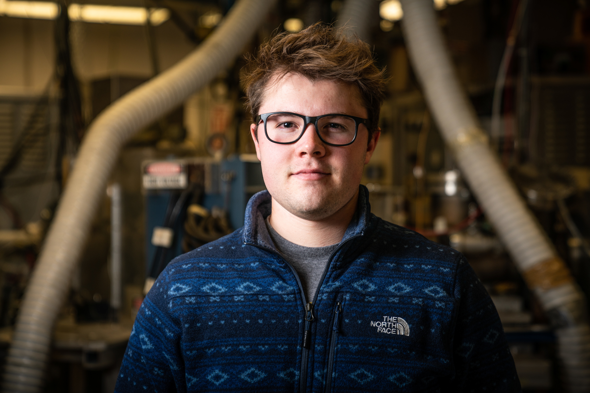

Cameron J. Owen

Contact
E-Mail: echo "moc.liamg@clsnewonoremac" | rev
Research Interests
My expertise lies at the intersection of chemistry, physics, and machine-Learning. My Ph.D. was focused on the development of scalable interatomic force fields for use in molecular dynamics simulations for the development of better heterogeneous catalysts, alloys, solid-acid electrolytes, and other materials of industrial importance.
Publications
Here is a link to my Google Scholar.
News
- 05/2024: Graduated with a Ph.D. in Chemistry from Harvard University!
- 03/2023: New preprint: we introduce TM23, a new ML potential benchmark of transition metals and test the performance of NequIP and FLARE.
-
Education
- 2020-Present, Harvard University, Ph.D., National Science Foundation Graduate Research Fellow
- 2019-2020, University of Cambridge, MPhil, Churchill Scholar
- 2015-2019, University of Utah, Hons. B.S. Chemistry, B.S. Physics, Math minor
Invited talks
- 2023, American Chemical Society Fall Meeting, San Fransisco, CA, CATL Division
Teaching
- Harvard CHEM 160, Fall 2022: The Quantum World (TF)
- Harvard PS 11, Spring 2021: Frontiers and Foundations of Modern Chemistry: A Molecular and Global Perspective (TF)